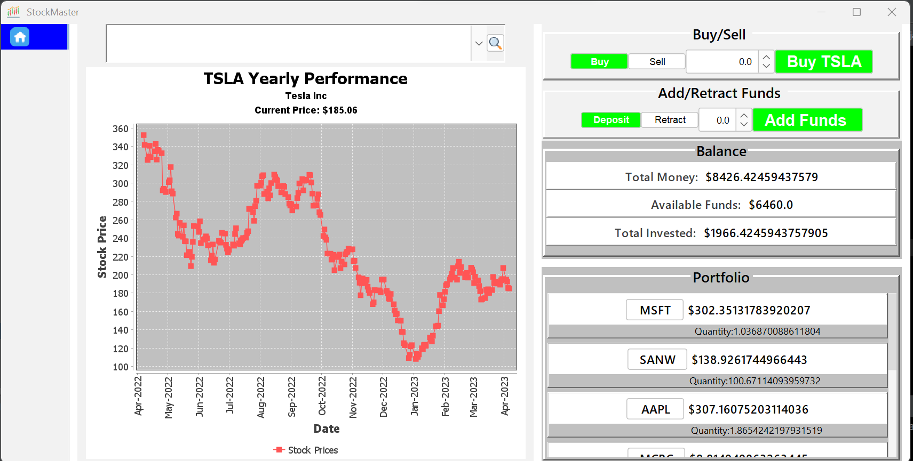

Those are the numerous projects I have realized why learning to code.
 This is my first big Java project. It is a GUI program with Java and Swing framework that emulates the stock market and allows users to buy or sell ~1000 stocks of their choice. It uses a SQL database for login and user authentification purposes as well as keeping track of user's balances and stock inventory. The app support operations such as buying/selling stocks, depositing and retracting funds(not real funds). The app allow user to research stocks and provide the current price as well as a graph(using the JfreeChart library) made of the historical data from up to 1Year. The app use the Jsoup library to parse through the HTML link from the google finance website. To do this I built a Web-Scrapper and used the JSoup library to automatically fetch and assemble real time data of the stock prices from the Google Finance website every 5 seconds
This is my second Java Project.It is a Gui that allows 2 players to go against each other in the famous game of Checkers.